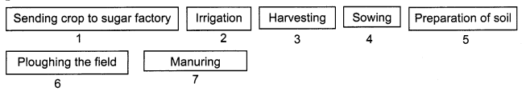
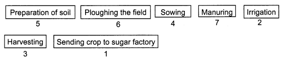
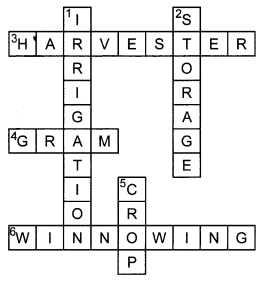
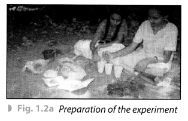
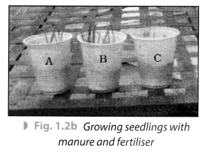
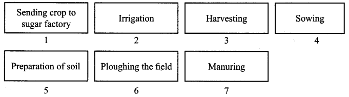
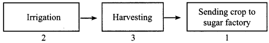
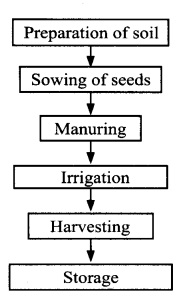

NCERT Solutions for Class 8 Science Chapter 1 Crop Production and Management PDF will assist you in scoring more marks. This includes 1 mark Questions, 2 Mark Questions, 3 Mark Numericals Questions, 5 Marks Numerical Questions, Multiple Choice Questions, and previous year questions from Crop Production and Management Chapter.
Topics and Sub Topics in Class 8 Science Chapter 1 Crop Production and Management:
| Section Name | Topic Name |
| 1 | Crop Production and Management |
| 1.1 | Agricultural Practices |
| 1.2 | Basic Practices of Crop Production |
| 1.3 | Preparation of Soil |
| 1.4 | Sowing |
| 1.5 | Adding Manure and Fertilisers |
| 1.6 | Irrigation |
| 1.7 | Protection from Weeds |
| 1.8 | Harvesting |
| 1.9 | Storage |
| 1.10 | Food from Animals |
NCERT Solutions for Class 8 Science Chapter 1 Crop Production and Management
Crop Production and Management Class 8 Science NCERT Textbook Questions
Question 1.
Select the correct word from the following list and fill in the blanks.
float, water, crop, nutrients, preparation
(a) The same kind of plants grown and cultivated on a large scale at a place is called _____
(b) The first step before growing crops is _______ of the soil.
(c) Damaged seeds would ______ on top of the water.
(d) For growing a crop, sufficient sunlight and ______ and ______ from the soil are essential.
Answer:
(a) crop
(b) preparation
(c) float
(d) water, nutrients
Question 2.
Match items in column A with those in column B.
| A | B |
| (i) Kharif crops | (a) Food for cattle |
| (ii) Rabi crops | (b) Urea and superphosphate |
| (iii) Chemical fertilisers | (c) Animal excreta, cow dung, urine and plant waste |
| (iv) Organic manure | (d) Wheat, gram, pea |
| (e) Paddy and maize |
Answer:
(i) (e)
(ii) (d)
(iii) (b)
(iv) (c)
Question 3.
Give two examples of each.
(a) Kharif crop
(b) Rabi crop
Answer:
(a) Kharif crop: Paddy and maize
(b) Rabi crop: Wheat and gram
Question 4.
Write a paragraph in your own words on each of the following.
(a) Preparation of soil
(b) Sowing
(c) Weeding
(d) Threshing
Answer:
(a) Preparation of soil: Soil preparation is necessary before growing a crop. It involves tilling and loosening the soil. This allows the roots to penetrate deep in the soil and to breath easily even when they are deep.
(b) Sowing: The process of putting seeds into the soil is called sowing. The tool used traditionally for sowing seeds is funnel-shaped. Nowadays a seed drill is used for sowing with the help of tractors. This tool sows the seed uniformly at a proper distance and depth.
(c) Weeding: Some undesirable plants grow along with crop and these unwanted plants are called weeds. The process of removing these unwanted plants is called weeding.
(d) Threshing: The process of separating the grain seeds from the chaff is called threshing.
Question 5.
Explain how fertilisers are different from manure.
Answer:
| Fertilisers | Manures |
| (i) A fertiliser is an inorganic salt. | (i) Manure is a natural substance obtained by the decomposition of cattle dung, human waste and plant residues. |
| (ii) A fertiliser is prepared in factories. | (ii) Manure can be prepared in the fields. |
| (iii) A fertiliser does not provide any humus to the soil. | (iii) Manure provides a lot of humus to the soil. |
| (iv) Fertilisers are very rich in plant nutrients like nitrogen, phosphorus and potassium. | (iv) Manure is relatively less rich in plant nutrients. |
Question 6.
What is irrigation? Describe two methods of irrigation which conserve water.
Answer:
The artificial method of watering the plants for assisting in their growth is called irrigation. Main sources of irrigation are wells, tube-wells, ponds, lakes, rivers.
Two methods which help us to conserve water are:
(i) Sprinkler irrigation system: This irrigation system has an arrangement of vertical pipes with rotating nozzles on the top. It is more useful in the uneven and sandy land where sufficient water is not available.
(ii) Drip irrigation system: This irrigation system has an arrangement of pipes or tubes with very small holes in them to water plants drop by drop just at the base of the root. It is very efficient as water is not wasted at all.
Question 7.
If wheat is sown in the kharif season, what would happen? Discuss.
Answer:
Wheat crop is sown from November/December to March/April. It is grown in winter and requires less water. If wheat is sown in Kharif season, its production will be decreased considerably.
Question 8.
Explain how soil gets affected by the continuous plantation of crops in a field.
Answer:
Continuous plantation of crops makes the soil poorer in certain nutrients as the crops take up nutrients from the soil. The soil becomes infertile. It does not get enough time to replenish the nutrients.
Question 9.
What are the weeds? How can we control them?
Answer:
The undesirable and unwanted plants which grow naturally along with the crop are called weeds. The growth of weeds can be controlled by adopting many ways. Tilling before sowing of crops helps in the uprooting and killing of weeds, which may then dry up and get mixed with the soil. Weeds are also controlled by using certain chemicals, called weedicides. Weedicides are sprayed in the fields to kill the weeds.
Question 10.
Arrange the following boxes in the proper order to make a flow chart of sugarcane crop production.

Answer:

Question 11.
Complete the following word puzzle with the help of clues given below.
Down
1. Providing water to the crops.
2. Keeping crop grains for a long time under proper conditions.
5. Certain plants of the same kind grown on a large scale.
Across
3. A machine used for cutting the matured crop.
4. A rabi crop that is also one of the pulses.
6. A process of separating the grain from the chaff.
Answer:

Crop Production and Management Class 8 Science NCERT Intext Activities Solved
Activity 1 (NCERT Textbook, Page 4)
Take a beaker and fill half of it with water. Put a handful of wheat seeds and stir well. Wait for some time.
Solution:
We observe that most of the seeds sink while some float on water. Damaged seeds become hollow and lighter so they float. In this way, we can separate damage seeds from the healthier ones.
Activity 2 (NCERT Textbook, Page 6)
Jake moong or gram seeds and germinate them. Select three equal sized seedlings out of these. Now take three empty glasses or similar vessels. Mark them A, B and C.To glass A add little amount of soil mixed with a little cow dung manure. In glass B put the same amount of soil mixed with a little urea. Take the same amount of soil in glass C without adding anything [Fig. 1.2(a)]. Now pour the same amount of water in each glass and plant the seedlings in them. Keep them in a safe place and water them daily. After 7 to 10 days observe their growth [Fig. 1.2(b)].


Solution:
After 7-10 days we observed that the growth was fastest in glass B followed by glass A. Glass C showed mini-mum growth.
Activity 3 (NCERT Textbook, Page 12)
Make the following Table in your notebook and complete it.
| S. No. | Food | Sources |
| 1. | Milk | Cow, Buffalo, She-goat, She-camel |
| 2. | Meat | Goat, Hen, Pig, Duck, Sheep |
| 3. | Egg | Hen, Duck, Goose |
| 4. | Honey | Honey bee |
NCERT Solutions for Class 8 Science Chapter 1 – 1 Mark Questions and Answers
Question 1.
Select the correct word from the following list and fill in the blanks : [NCERT]
float, water, crop, nutrients, preparation
(a) The same kind of plants grown on a large scale at a place is called …………..
(b) The first step before growing crops is …………. of the soil.
(c) Damaged seeds would …………. on top of water.
(d) For growing a crop sufficient sunlight, …………….. and …….. the soil are essential.
Solution:
(a) crop
(b) preparation
(c) float
(d) nutrients, water
Question 2.
Match items in column ‘A’ with those in column ‘B’ [NCERT]
| (A) | (B) |
| 1. Kharif crops 2. Rabi crops 3.Chemicalfertilisers 4. Organic manure |
(a) Food for cattle (b) Urea and super phosphate (c) Animal excreta,cowdung, urine and plant waste. (d) Wheat, gram, pea. (e) Paddy and maize |
Solution:
| (A) | (B) |
| 1. Kharif crops 2. Rabi crops 3. Chemical fertilisers 4. Organic manure |
(e) Paddy and maize (d) Wheat, gram, pea (b) Urea and super phosphate (c) Animal excreta, cow dung, urine and plant waste. |
Question 3.
What are crops?
Solution:
Crops are plants of the same kind grown in large quantities for food.
Question 4.
What is the basis of classification of crops in our country?
Solution:
In our country, crops are classified on the basis of the season in which they grow.
Question 5.
What are kharif crops?
Solution:
The crops which are sown in the rainy season and harvested in September/October are called kharif crops.
Question 6.
What are summer crops?
Solution:
The crops which are grown in the summer season and harvested before rainy season are called summer crops or zayed crops.
Question 7.
Name two summer season crops.
Solution:
Moong and muskmelon are summer season crops.
Question 8.
What are rabi crops?
Solution:
The crops which are grown in the winter season and harvested in March/April are called rabi crops.
Question 9.
Why paddy cannot be grown in the summer season?
Solution:
Paddy requires a lot of water, so it can only be grown during rainy season.
Question 10.
What is meant by agricultural practices?
Solution:
The activities undertaken by farmers over a period of time for cultivation of crops are known as agricultural practices.
Question 11.
Write a paragraph in your own words on preparation of soil.
Solution:
Soil is prepared by tilling i.e., loosening and turning of soil.
Question 12.
Name the tool used for tilling of soil.
Solution:
A plough is used for tilling of soil.
Question 13.
What are crumbs?
Solution:
A ploughed field may have big pieces of soil called crumbs.
Question 14.
How are crumbs broken?
Solution:
The crumbs are broken with the help of a plank.
Question 15.
Why should loose soil be levelled?
Solution:
Loose soil be levelled for sowing and irrigation.
Question 16.
How is levelling of soil done?
Solution:
Levelling of soil is done with the help of a leveller.
Question 17.
How is ploughing done these days?
Solution:
Now a days ploughing is done by tractor having a multipronged plough.
Question 18.
What is meant by sowing?
Solution:
Sowing is the process of putting seeds in the soil.
Question 19.
What is meant by good quality seeds?
Solution:
The good quality seeds means clean and healthy seeds of a good variety free from diseases.
Question 20.
What is the advantage of sowing seeds with a seed drill?
Solution:
The advantage of sowing seeds with a seed drill is that the seeds are sown at a proper depth under the soil and the distance between them is uniform.
Question 21.
What are manure and fertilisers?
Solution:
The substances which are added to the soil in the form of nutrients for the healthy growth of plants are called manure and fertilisers.
Question 22.
What is organic manure?
Solution:
Manure obtained from animal or plant waste such as cattle dung, droppings is called organic manure.
Question 23.
What is meant by crop rotation?
Solution:
Growing crops alternatively to prevent depletion of any one nutrient from soil is called crop rotation.
Question 24.
What is meant by irrigation?
Solution:
The supply of water to crops in the fields at different intervals is called irrigation.
Question 25.
What is the drip system of irrigation?
Solution:
Falling of water drop by drop at the roots of the plant is called drip irrigation.
Question 26.
Why should weeds be removed?
Solution:
Weeds compete with the crop plants for water, nutrients, space and light and thus affect the growth of the crop. So, they should be removed.
Question 27.
Name the process of removal of weeds.
Solution:
Weeding is the process of removal of weeds.
Question 28.
How is harvesting done in our country?
Solution:
Harvesting in our country is done either manually by sickle or by a machine called harvester.
Question 29.
Name the farm machine used for harvesting and threshing both.
Solution:
Combine.
Question 30.
What is meant by winnowing?
Solution:
After threshing, the grain is separated from the chaff, with the help of wind. This is known as winnowing.
Question 31.
How are food grains stored?
Solution:
Food grains are dried in the sun to remove the excess moisture and then stored.
Question 32.
Why should grains be dried before storage?
Solution:
Grains should be dried before storage to remove the excess moisture in them, so that microbes are not able to attack the grains.
Question 33.
What is meant by animal husbandry?
Solution:
The study of the care of animals is known as animal husbandry.
Question 34.
Name some animals from whom milk can be obtained.
Solution:
Milk can be obtained from cow, buffalo, she goat and she camel.
Question 35.
How is fish useful for us?
Solution:
Fish is highly nutritious and easily digestible food. Cod liver oil from fish is also a rich source of vitamin D.
Question 36.
Name some animals which are reared for their meat.
Solution:
Sheep, goat, pigs, chicken and fish are reared for their meat.
Question 37.
Why is honey so useful?
Solution:
Honey is an antiseptic and its enzymes help in digestion. It is also used for making several ayurvedic medicines.
NCERT Solutions for Class 8 Science Chapter 1 – 2 Mark Questions and Answers
Question 1.
If wheat is sown in the kharif season, what would happen? Discuss. [NCERT]
Solution:
The farmer will not get a good crop because wheat should be sown in winter season.
Question 2.
Explain how soil gets affected by the continuous plantation of crops in a field. [NCERT]
Solution:
When the crops are planted continuously in a field, the soil becomes deficient in nutrients.
Question 3.
What are weeds? How can we control them? [NCERT]
Solution:
Weeds are unwanted plants in the fields. It can be controlled by
- During tilling they are removed.
- By removing them manually.
- By using weedicides.
Question 4.
(a) Give two examples of each : [NCT 2011, NCERT]
(i) Kharif crop
(ii) Rahi crop
(b) Can you explain why most crops have a particular season in which they grow?
Solution:
(a) (i) Groundnut and cotton.
(ii) Pea and mustard.
(b) Most crops have a particular season in which they grow because different crops need different temperature, humidity and rainfall.
Question 5.
What is a seed drill?
Solution:
A seed drill is used for sowing seeds. It has a funnel shaped opening leading to long tubes attached to a plough. Seeds are put into the funnel. As the plough makes furrows in the soil, the seeds are deposited in the soil by the drill.
Question 6.
Give two reasons why seeds should be sown at correct distance.
Solution:
Seeds should be sown at a correct distance. The reasons are:
- If the seeds are too close, they will not get enough water, sunlight and nutrients.
- If the seeds are too far apart, there is wastage of field space.
Question 7.
Give two methods by which threshing can be done.
Solution:
Threshing can be done manually by making oxen or buffaloes trample over the cut crop or by a machine called thresher.
Question 8.
A farmer grow moong during the rainy season. Will he get a good crop?
Solution:
The farmer will not get a good crop of moong because moong should be grown during summer season.
Question 9.
Why does loosening of soil allow roots to breathe easily?
Solution:
When soil is loosened, the roots can breathe easily because there is more air present in the soil.
Question 10.
A farmer never leaves his field fallow. Will he get a good crop?
Solution:
If the field is never left fallow, the soil will become deficient in certain nutrients and the farmer will not get a good crop.
Question 11.
What are fertilisers? Name two important fertilisers.
Solution:
Fertilisers are chemical substances which are rich in a particular nutrient. Urea and ammonium sulphate are two fertilisers.
Question 12.
Give two disadvantages of using fertilisers excessively.
Solution:
Disadvantages of using excessive fertilisers :
- Soil fertility is reduced.
- It becomes a source of water pollution.
Question 13.
What is the advantage of using manure?
Solution:
Manure improves soil texture as well as its water retaining capacity.
Question 14.
Why should watering be increased during summer?
Solution:
The frequency of watering is higher in summer due to the increased rate of evaporation of water from the soil and the leaves.
Question 15.
Name the two main methods of irrigation used in India nowadays.
Solution:
Two main methods of irrigation used in India’s nowadays are :
- Sprinkler system
- Drip system.
Question 16.
When should the weedicides be sprayed?
Solution:
The weedicides are sprayed during the vegetative growth of weed before flowering and seed formation.
Question 17.
How are grains stored in homes?
Solution:
At home grains are stored by putting dried neem leaves.
NCERT Solutions for Class 8 Science Chapter 1 – 3 Mark Questions and Answers
Question 1.
Define lodging. How does it happen? [MSE (Chandigarh) 2008, 2006]
Solution:
Lodging is the falling of crop plants at the grain maturation stage. It happens due to untimely rains and strong winds.
Question 2.
- What is harvesting?
- Mention two important uses of tilling the soil. [MSE (Chandigarh) 2008]
Solution:
- Cutting and gathering of crops after maturation is known as harvesting.
- Uses of tilling the soil are :
- It improves air circulation.
- Roots can penetrate deeper into the soil.
Question 3.
- Define crop.
- Name two categories of crops based on season. [KVS 2005]
- What are pesticides? [KVS 2005]
Solution:
- The plants of same kind grown at a place is referred to as crop.
- Two categories of crop based on season are kharif and rabi crops.
- Pesticides are chemicals used to protect crops from harmful organisms called pests.
Question 4.
- Earthworms are nature’s ploughmen. How?
- How is soil a resource for all living organisms? Give any two points. [DAV2006]
Solution:
- They make burrows in soil and bring lower fertile layer above the ground.
- It is habitat for many living organisms.
- Plants grow in soil which provide food, shelter, material for clothes.
- Plants grows in soil and provide O2.
- Decomposition occurs in soil.
Question 5.
What is irrigation? Describe two methods of irrigation which conserve water. [NCERT]
Solution:
Supply of water to crops at appropriate intervals is called Irrigation.
Two methods of irrigation are :
- Sprinkler system – Where water is sprinkled on the crops as if it is raining.
- Drip system – In this system, the water falls drop by drop just at the position of the roots.
Question 6.
Name three natural methods of replenishing the nutrients of the soil. Are these natural methods sufficient to maintain the fertility of the soil?
Solution:
Field fallow, crop rotation and mixed cropping are three natural methods of replenishing the nutrients of the soil. These natural methods are not enough and farmers have to resort to manures and fertilisers.
Question 7.
Give three reasons, why soil should be turned and loosened?
Solution:
- It allows the roots to penetrate deep in the soil.
- It helps the growth of earthworms and microbes in the soil.
- Various nutrients held in the dead organisms are released back in the soil.
Question 8.
What are the three steps involved in the preparation of soil?
Solution:
- Ploughing the soil to loosen it.
- Levelling the soil to ensure uniform distribution of water and nutrients.
- Manuring to provide nutrients to the soil.
Question 9.
Name the three tools used for ploughing and give the function of each.
Solution:
- Plough – It is used for tilling of soil, adding fertilisers to the crop, removing the weeds, scrapingof soil.
- Hoe – It is used for removing weeds and for loosening the soil.
- Cultivator – Used for ploughing.
Question 10.
How is organic manure obtained?
Solution:
Farmers dump plant and animal waste in pits at open places and allow it to be decomposed by microorganisms. This decomposed material is converted into organic manure.
Question 11.
Give three reasons. Why water is important for plants?
Solution:
Water is important for plants because:
- Nutrients dissolved in water are absorbed by roots of plants.
- Germination of seeds takes place because of water.
- It protects the plant from frost and hot air currents.
Question 12.
What are the advantages of sprinkler system of irrigation?
Solution:
Advantages of using sprinkler system of irrigation are :
- The sprinkler system of irrigation is useful on the uneven lands where water is available in smaller quantities.
- It conserves water.
- It is useful for the sandy soil.
Question 13.
Give the advantages of using the drip system of irrigation.
Solution:
Advangates of using drip system of irrigation are :
- It provides water to plants drop by drop.
- Water is not wasted at all.
- It can be used where availability of water is less.
Question 14.
Explain the manual method of removing weeds.
Solution:
The manual’removal of weeds includes physical removal of weeds by cutting them close to the ground from time to time. This is done with the help of khurpi or a harrow.
NCERT Solutions for Class 8 Science Chapter 1 – 5 Mark Questions and Answers
Question 1.
- What are the two ways of sowing the seeds? [DAV2007]
- Give any three advantages of ploughing.
Solution:
- Seeds can be sown manually or by seed drills.
- Ploughing has following advantages :
- Loose soil has lot of air trapped which allows roots to breathe.
- Loose soil allows the roots to penetrate deeper.
- Loose soil helps the growth of microbes and other organisms.
Question 2.
- What will happen if field is not ploughed before sowing the seeds? Give any two disadvantages. [DAV2006]
- How are perishable food items stored on a commercial scale?
- Why should excessive supply of water be avoided?
- What are weeds?
Solution:
- Disadvantages:
- Seeds cannot be sown at proper depth.
- Water and air holding capacity of soil will be poor.
- Perishable food items can be stored in deep freezers and cold storages.
- Roots get damaged and the plants die because of excessive supply of water.
- They are unwanted plants which grow along with the cultivated plants.
Question 3.
(a) Why does farmer rotate crops in the field?
(b) Differentiate between manure and fertiliser. [DAV2005]
Solution:
(a) To replenish the nutrients of the soil.
(b)
| Manure | Fertiliser |
| (i) It is natural. (ii) It is organic. (iii) It adds humus to the soil. (iv) It is not nutrient specific. (v) It is cheap. (vi) It is prepared in the fields. |
(i) It is man-made. (ii) It is inorganic. (iii) It does not add humus. (iv) It is nutrient specific. (v) It is costly. (vi) It is prepared in factories. |
or
(a) (i) While spraying pesticides, nose and mouth should be closed.
(ii) Position of the farmer should be such that the wind blows away from his face.
(iii) Immediately after spraying is done, hands should be washed, face and mouth should be cleaned with water.
Question 4.
Arrange the following boxes in proper order to make a flow chart of sugarcane crop production: [NCERT]

Solution:

Question 5.
List the steps involved in crop production in a flow chart.
Solution:


Question 6.
Explain the method used these days to sow seeds.
Solution:
These days the seed drill is used for sowing seeds with the help of a tractor. This sows the seed uniformly at a proper distance and depth. Seeds get covered by soil during sowing with a drill. This prevents damage caused by birds. Sowing by using seed drill saves time and labour.
Question 7.
What are the advantages of organic manure?
Solution:
The advantages of organic manure are :
- It enhances the water holding capacity of the soil.
- It makes the soil porous due to which exchange of gases takes place.
- The number of friendly microbes is increased.
- The organic manure improves the texture of the soil.
Question 8.
How does a plough work?
Solution:
A plough is an agricultural implement used for tilling and loosening of soil. It has a triangular iron strip called plough share. Plough shaft is the main part made of a long wooden log. The other end is hung on the bull’s necks. The plough can be with two bulls and one person.
Question 9.
Write a paragraph in your own words on each of the following : [NCERT]
- Preparation of soil
- Sowing
- Weeding
- Threshing
Solution:
- Preparation of soil : Preparation of the soil involves loosening and turning the soil.
This process, known as ploughing, is done by using a wooden or iron plough which is pulled either by an animal or by tractors. Loose soil is then levelled by using a wooden or iron leveller. - Sowing : Seeds are sown after preparation of the soil. Seeds can be sown manually or by seed drills by the process called broadcasting. Seeds should be sown at the correct depth and at correct distance.
- Weeding : The process of removing weeds from a field is called weeding. Weeding can be done manually by pulling the weeds out by hand or by using a harrow to uproot them. Weeding can also be done by spraying special chemicals called weedicides.
- Threshing: Threshing is the process of separating the grain from the cut crop. Threshing can be done manually by making oxen or buffaloes trample over the cut crop or by using a machine called thresher.
NCERT Solutions for Class 8 Science Chapter 1 – Multiple Choice Questions
Question 1.
Paddy can be grown in
(a) summer season
(b) autumn
(c) rainy season
(d) winter
Solution:
(c)
Question 2.
Wheat can be grown in
(a) winter
(b) rainy season
(c) spring
(d) summer
Solution:
(a)
Question 3.
Which of the following is a rabi crop?
(a) Paddy
(b) Maize
(c) Mustard
(d) Soyabean
Solution:
(c)
Question 4.
Loosening and turning of the soil is known as
(a) tilling
(b) broadcasting
(c) transplantation
(d) manuring
Solution:
(a)
Question 5.
Sowing the seeds manually is known as
(a) ploughing
(b) broadcasting
(c) tilling
(d) transplantation
Solution:
(b)
Question 6.
The method of transferring seedlings from nursery to field is known as
(a) broadcasting
(b) transplantation
(c) crop rotation
(d) harvesting
Solution:
(b)
Question 7.
Leaving the agricultural land uncultivated for one or more seasons is known as
(a) field fallow
(b) crop rotation
(c) manuring
(d) threshing
Solution:
(a)
Question 8.
Chemical substances rich in specific nutrients are called
(a) manures
(b) fertilisers
(c) pesticides
(d) weedicides
Solution:
(b)
Question 9.
Chemicals which kill weeds are known as
(a) fertilizers
(b) pesticides
(c) weedicides
(d) none of these
Solution:
(c)
Question 10.
Cutting and gathering of crops after maturation is known as
(a) harvesting
(b) threshing
(c) broadcasting
(d) tilling
Solution:
(a)
More CBSE Class 8 Study Material
- NCERT Solutions for Class 8 Maths
- NCERT Solutions for Class 8 Science
- NCERT Solutions for Class 8 Social Science
- NCERT Solutions for Class 8 English
- NCERT Solutions for Class 8 English Honeydew
- NCERT Solutions for Class 8 English It So Happened
- NCERT Solutions for Class 8 Hindi
- NCERT Solutions for Class 8 Sanskrit
- NCERT Solutions